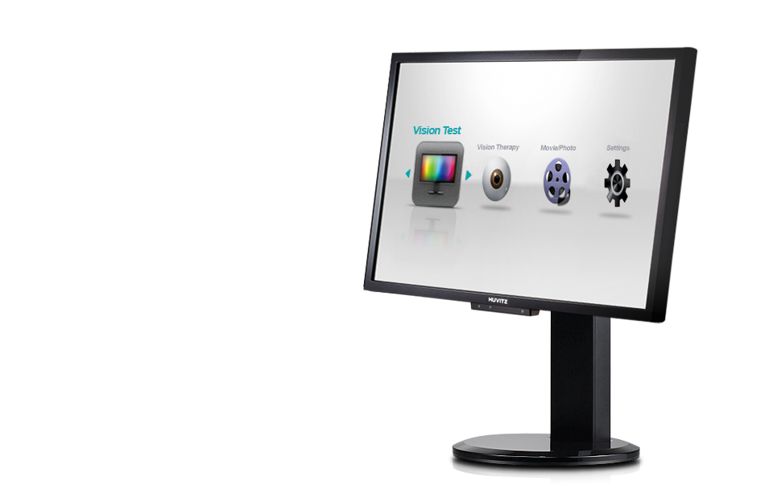

HDC-9000N
다양함을 더 할수록, 기술을 더 할수록 검안은 정확해집니다.
최다 차트와 시표를 Full HD 디지털기술로 만난다.
휴비츠 HDC-9000N/PF
- 
제품소개
- 고화질 24인치 LCD 차트
- 24인치 칼라 TFT-LCD 편광패널을 채용하고 1,920x1,080 픽셀의 고해상도 차트를 제공함으로써 더 정확한 검안을 할 수 있습니다.
- 다양한 종류의 기본 검안차트 제공
- 100여 종의 다양한 차트는 정확한 시력 및 시 기능 측정을 위한 모든 종류의 검사법을 지원합니다.
영문, 숫자, 란돌트링, 스넬렌 시표 및 유아용 그림시표까지 다양한 시표를 제공합니다.
- 컬러비전 테스트
- 색각이상판정을 위한 12가지 시표 및 색각이상을 분류하고 정도를 구분하기 위한 9가지 시표를 제공하며,
색각이상으로 판정된 경우 제1(적색약) 및 제 2색각 이상(녹색약)으로 분류하고 그 정도를 알려줍니다.
- 대조대비 테스트
-
문자시표를 사용하여 식별 가능한 Contrast의 단계를 검사하는 대비테스트와 눈의 해상력을 고려하여
방향성 있는 바 형태의 시표를 사용한 대비감도 테스트를 제공합니다.
- 색상 검사(Hue Test)
-
파장에 따라 세밀하게 단계별로 구분된 색상을 식별하는 능력을 검사합니다.
85개의 색상시표로 구성된 전문검사 및 15개의 색상시표로 구성된 간략검사를 제공합니다.
제품사양
| Masks | Line(Horizontal) / Column(Vertical) / Single Optotype Controlled by Remote Controller with infrared communication |
|---|---|
| Red / Green Chart | Adjustable Color Depth |
| Test Distance | From 2.5 to 6m( scale of 0.1m ) / from 8 to 20ft.( scale of 0.5ft ) |
| LCD Compatibility | 17”, 19”, 20”, 23” and 24” |
| Operating System | Windows 2000 / Windows XP / Windows Vista |
| Data Transmission | Connected to PC[USB], Connected to HDR/CDR[CAN] |
| Chart Type | 3 type in decimal or fractional meter, or in feet |
| Total File Size on Disk | 100MB |
| Remote Controller | 65mm(W) x 195mm(L) x 20mm(H) / 160g(Default Option) |
| Receiver | 51mm(W) x 80mm(L) x 21mm(H) / 46g(Default Option) |
| Power | 5V, 100mA, 0.5W |
| Wall Mount | 240mm(W) x 25.5mm(D) x 230mm(H) / 2.9kg Customized for iMac(Optional) |
| Designs and details can be changed without prior notice for improvements. | |